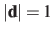

Next:
distanceInv: mean distance between
Up:
List of available colvar
Previous:
distanceVec: distance vector between
Contents
Index
distanceDir
: distance unit vector between two groups.
The
distanceDir {...}
block defines a distance unit vector component, which accepts the same keywords as the component
distance
:
group1
,
group2
, and
forceNoPBC
. It returns a 3-dimensional unit vector
, with

.
Jérôme Hénin 2015-03-03